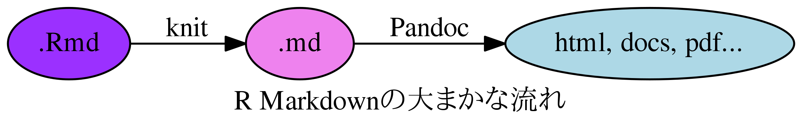

R Markdownテンプレートの
作り方
Japan.R 2018
2018-12-01
kazutan
はじめに
自己紹介
- 前田 和寛(Maeda Kazuhiro)
- 福岡で分析のおしごと
- @kazutan
- GitHub
- Qiita
- #宇宙本 #犬4匹本

今回のおはなし
- みなさん、標準のR Markdownで満足してますか?
- もっと自分好みにしたくありませんんか?
今回は｢自分でR Markdownのテンプレートを作る方法｣を解説します
- 初級編: はじめてのRmdテンプレ作成
- Rおじさん編: 私が選んた(内部的に)マニアックなものを紹介
免責事項
- かなりマニアックです
- R Markdownに対するある程度の理解が必要となります
- 実際に作るには(内容によって)以下の知識が必要になります
- CSS, Javascript
- Pandoc etc…
- パッケージ開発に関する内容は省略します
- かなり駆け足です
- 質問はr-wakalangのrmarkdownチャンネルまで
- 後日、この内容は公開します
- Qiita｢R Advent Calendar 2018｣
- 今日は｢こんな世界もあるとやなぁ｣と感じれもらえれば…
rmarkdown::renderの処理内容
よく出てくる処理フロー
- 以下の2ステップでドキュメントなどを生成します
- Rmdファイル内のRコードを評価
- Rコードの出力をMarkdownに起こす
- 出来上がったMarkdownファイルを変換
- Pandocというソフトウェアを利用
- RStudioに標準で組み込まれています

少し細かい処理フロー
- 実際はこんな感じ
- 詳しくは以下の記事を参照: R Markdownの内部とテンプレート開発 https://kazutan.github.io/TokyoR61/intoTheRmarkdown_d.html
ポイントその1
簡単にするとこんな感じ
- Rmdファイルの内容や設定を取得
- KnitしてRコードを評価
- outputで指定されているoutput形式およびそこの設定にしたがってテンプレートを読み込んで内容を流しこむ
(Pandocのお仕事) - 調整して仕上げて完了
R Markdownテンプレート開発のポイントはここ!!
ポイントその2
さっきの部分を掘り下げるとこんな感じ
- output用に準備されているPandoc向けテンプレートをset
- 流しこむ内容を整える
- 設定されたPandocオプションとPandoc向けテンプレートを利用してPandoc
つまり、これらが重要:
- Pandoc向けテンプレートを準備する
- Pandocのオプションが設定できるようにする
初級編
- 既存のものに機能を追加 -
まずは拡張から
- いきなり1から作るのは大変
- まずは｢すでにあるテンプレートをちょっといじる｣ところから
- 大事なのは｢仕組みを知ること｣
- 少し触れながら慣れましょう
今回は、zousan::zousan_documentの一部を使って説明します
zousanパッケージは以下のコードでインストールできます:
案件整理
- 要望:
- Webでよくある｢画像をクリックしたらぬっっと出てくる、あれがほしい
- 案件整理:
- どうやらlightboxというJavaScriptライブラリでできそう
- このライブラリを読みこませれば、ドキュメント内のimgオブジェクトをクリックしたら出してくれるようになるらしい
- てことは…
- 必要なscriptを必要なタイミングで挿入できるようPandocテンプレートに仕込む
- Rの出力関数(ここでは
zousan_document)にON/OFFをできるよう仕込む - 使いやすいように雛形を準備する …でOK!
- ホントは予想外の仕様で面倒な処理があったけど省略
- どうやらlightboxというJavaScriptライブラリでできそう
パッケージ用プロジェクトの準備
- このあたりはパッケージ開発の流れと全く一緒
- GitHubにリポジトリを準備
- 作業環境へgit clone
- 適宜設定
すみませんが省略します
Pandocテンプレートを仕込む
この場所にdefault.htmlを準備する:
(リポジトリのroot)
└inst
└rmarkdown
└templates
└(output_format名)
└resource
└default.htmloutput_format名はこのあとに準備する関数名と同じにすること- 今回の例なら
zousan_document
- 今回の例なら
- この位置に置くのは固定だと思ってください
- 今回は
rmarkdownパッケージ標準のをベースにします- その内容をまるっと持ってくる
- コードはこちら https://github.com/rstudio/rmarkdown/blob/master/inst/rmd/h/default.html
- htmlファイルっぽいけど、いろいろ含まれてますが省略
$if(lightbox)$
<link href="https://cdnjs.cloudflare.com/ajax/libs/lightbox2/2.9.0/css/lightbox.min.css" rel="stylesheet">
<script src="https://cdnjs.cloudflare.com/ajax/libs/lightbox2/2.9.0/js/lightbox.min.js"></script>
$endif$大事なのはここ!
$if(lightbox)$
hogehoge...
$endif$- Pandocはオプションによって、テンプレート内に埋め込まれたifを分岐させることができる
- このPandocへ送るオプションは自分で自由に設計できる
- Pandocの処理段階ででやりたい表現は、Pandocのうえでいくらでもできる
- あとは自分好みに
default.htmlをいじりまわしてください- ただし、後で設定したい内容はちゃんと覚えておいてください
- 指定の仕方は後述します
- 興味がある方はPandoc関連のドキュメントを調べてください
$if(lightbox)$
hogehoge...
$endif$テンプレートhtmlにscriptやcssを仕込む
default.htmlを自分で準備すれば、好き勝手作れる- 今回は以下のようなscriptを記述
- lightboxが不要なimgを拾ってしまってたので
- 今回は以下のようなscriptを記述
出力用の関数を記述するRファイルを作成
zousan::document()関数を準備します- 以下のディレクトリに関数を記述したRファイルを設置
- ファイル名は自身がわかるようにしとけばOK
- 今回は
zousan_document.Rとします
- 今回は
- これは通常のパッケージ開発と同じ
- ファイル名は自身がわかるようにしとけばOK
- 以下のディレクトリに関数を記述したRファイルを設置
(リポジトリのroot)
└R
└zousan_document.Routput format関数を作成
- 1から作ると非常に大変なのでベースになるoutput formatを決めてそれを流用
- 実はoutput_formatを作成する関数には
base_format引数が存在- それを利用すると簡単に継承してくれる
- 実はoutput_formatを作成する関数には
zousan_documentはhtml_documentをbase_formatとして利用- 記述するコード量がぐっと減る
html_document自体はhtml_document_baseから継承- 興味があって暇を持て余している人は、一度ソースコードを眺めてみてください
引数の定義
zousan_document <- function(fig_width = 7,
fig_height = 5,
(省略)
lightbox = TRUE,
(省略)
...) { - R MarkdownテンプレートのUI
- この初期値設定は非常に重要
heml_documentにはないけど、新たに`lightbox = TRUEをセット
pandocへ引き渡すオプションを整形
rmarkdown::pandoc_varlabel_arg関数を使うと簡単に整形してくれる- あとはこれをPandocに引き渡す他のオプションとセットにしてやればOK
- 詳しくはこの関数全体を読んでください
ouput_format()関数を準備
# return format
output_format(
knitr = knitr_options_html(fig_width, fig_height, fig_retina, keep_md, dev),
pandoc = pandoc_options(to = "html",
from = from_rmarkdown(fig_caption, md_extensions),
args = args),
keep_md = keep_md,
clean_supporting = self_contained,
base_format = html_document(mathjax = mathjax,
md_extensions = md_extensions,
self_contained = self_contained,
...)
)pandoc =のところでpandocへ投げるオプションを送りつける- これも
rmarkdown::pandoc_optionsという関数が準備されている - base_formatで継承させるものを指定する
- これも
skeleton(骨組)を準備
- ダイアログボックスからRmdファイルを作成するときに利用できるTemplate
- 以下の場所にRmdファイルを準備すると、パッケージインストール時に自動で登録してくれるようになる
- 内容は自由です。ただ、そのRmdをKnitすれば自作テンプレートの特徴がよくわかるようなのがいいと思います
(リポジトリのroot)
└inst
└rmarkdown
└templates
└(output_format名)
└skeleton
└skeleton.Rmdなお、zousan_documentはhtml_documentのYAML部分を簡素化したやつです:
---
title: "Untitled"
output: zousan::zousan_document
---
(以下略)Templateメニュー用の説明はtemplate.yamlにまとめて、以下の場所に設置します
(リポジトリのroot)
└inst
└rmarkdown
└templates
└(output_format名)
└template.yaml <- コレzousan_docmentではこんな感じ
他のパッケージをいろいろ見比べてみて、いろいろ試してみてください
まとめ
こんな感じ:
(リポジトリのroot)
├ R
│ └zousan_document.R <- zousan::zousan_document()を準備
└inst
└rmarkdown
└templates
└(output_format名)
├resource
│ └default.html <- Pandocで流しこむ雛形ファイルを準備
└skeleton
│ └skeleton.Rmd <- 新規Rmdファイルを作成するときのファイル
└template.yaml <- Templateの説明とかを書くでは使ってみよう
(デモ)
Rおじさん編
注意
- ここから先は(内部的に)かなりマニアックなテンプレの紹介です
- 本当はこっちをメインにしたかった
- でも20分では無理でした
- 簡単に2つ紹介して、かるい解説をします
fullpagejsパッケージ
- 自分で主催した2泊3日の山中湖開発合宿内で作成したパッケージ
- すごくいいところでした(詳細は #合宿だゾウ でTwitter検索)
- fullpage.jsというjsライブラリを利用してWebページをRmdで作成可能
- この出力はPandocに組み込まれていないので、結構がんばった
- reveal.jsはPandocに組み込まれいます
- この出力はPandocに組み込まれていないので、結構がんばった
xaringanパッケージ
- R忍者(Xie Yuhui)が作ったスライド用パッケージ
- remark.jsを神が使いたくて、構想1年･実装3ヶ月くらいで作った(はず)
- 内部的にはすごいことをしてる
- remark.jsは｢markdownで書かれた内容を高速にスライドにする｣ライブラリ
- なので、｢内部でmarkdownの内包を保持してバイパスを通してrender｣させてる
- 他の依存性を簡単にするためにPandocを利用しているが、正直Pandocいらなくね?って 構成
- 半端ないって。
さいごに
大切なのは欲求と想像力
- HTMLでやりたいことはかなりできる
- cssやjavascriptを自由に仕込める
- やりこめば(多分)ゲーム的なのも?
- 実は同じようなやり方でTexもいける
- このあたりはてふにしゃんにおまかせします
- 気になる方は調べてみてください
つらみ
- Pandocの仕様やversionで苦労する
- cssがどうあたってくるのかがわからん
- Javasciptはぞうさんにはわからん
- 開発コストの割に報われない
- デバック? なにそれおいしいの?